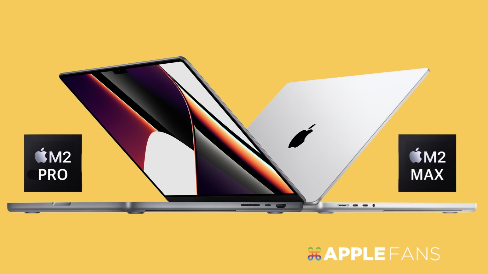
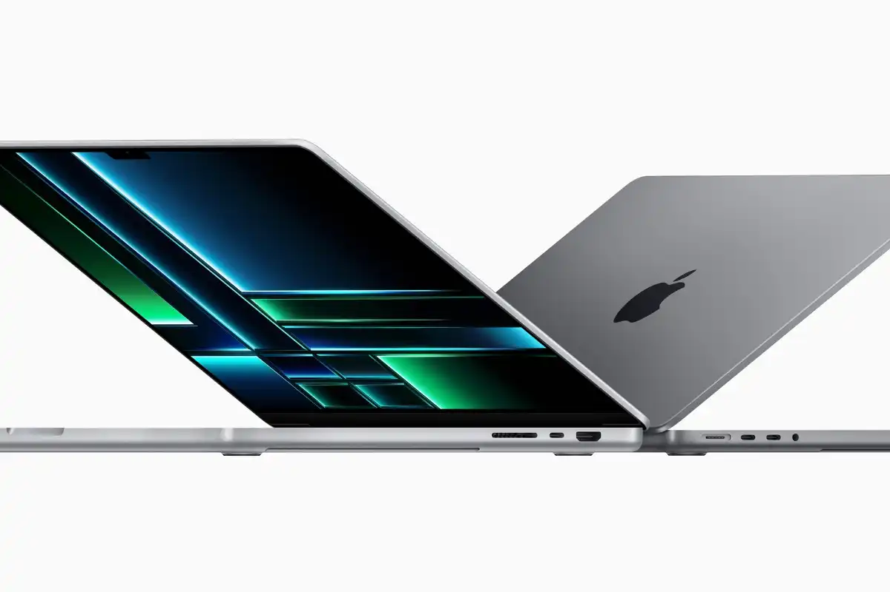
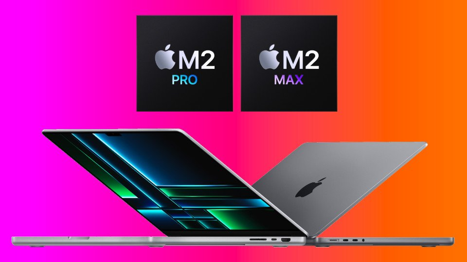

процессором Apple следующего
поколения, который обеспечивает еще более энергоэффективную производительность и время автономной работы для
профессиональных пользователей. С M2 Pro и M2 Max - самым мощным и эффективным чипом в мире для
профессионального ноутбука - MacBook Pro решает сложные задачи, такие как рендеринг эффектов, который в 6 раз
быстрее, чем самый быстрый MacBook Pro на базе Intel, и цветокоррекции, которая в 2 раза быстрее.1 Основываясь
на беспрецедентной энергоэффективности кремния Apple, время автономной как продвинутый HDMI, который впервые
поддерживает дисплеи 8K. Благодаря до 96 ГБ унифицированной памяти в модели M2 Max создатели могут работать над
сценами настолько большими, что ноутбуки ПК даже не могут их запустить.4 Дополняют непревзойденные функции
MacBook Pro его знаменитый дисплей Liquid Retina XDR, широкий спектр возможностей подключения, HD-камера
FaceTime 1080p, звуковая система с шестью динамиками и микрофоны студийного качества. В сочетании с macOS
Ventura пользовательский интерфейс MacBook Pro не имеет себе равных. Клиенты могут заказать новый MacBook Pro
14 и 16 дюймов уже сегодня, и будет доступен во вторник, 24 января.

С M2 Pro и M2 Max MacBook Pro способен трансформировать профессиональные рабочие процессы в широком спектре дисциплин, от искусства до науки и разработки приложений. Пользователи, желающие перейти с моделей Mac на базе Intel, столкнутся с еще более значительным улучшением производительности, времени автономной работы, возможностей подключения и общей производительности. MacBook Pro также поддерживает производительность независимо от того, подключены ли пользователи к сети или подключены к аккумулятору.MacBook Pro с M2 Pro оснащен 10- или 12-ядерным процессором с восемью высокопроизводительными и четырьмя высокоэффективными ядрами для повышения производительности до 20 процентов по сравнению с M1 Pro. Благодаря пропускной способности унифицированной памяти 200 ГБ/с - в два раза больше, чем в M2 - и до 32 ГБ унифицированной памяти пользователи могут решать Графический процессор следующего поколения с 19 ядрами обеспечивает на 30 процентов большую производительность графики, а Neural Engine на 40 процентов быстрее, ускоряя задачи машинного обучения, такие как анализ видео и обработка изображений. Мощный медиа-движок в M2 Pro также разрывается с самыми популярными видеокодеками, значительно ускоряя воспроизведение и кодирование видео при использовании очень мало энергии.
Новые 14-дюймовые и 16-дюймовые MacBook Pro предлагают лучшее время автономной работы, чем модели 2021 года. Apple утверждает, что новый MacBook Pro обеспечивает самое длительное время автономной работы в истории Mac - до 22 часов по сравнению с 21 часом, предлагаемым 16-дюймовой моделью 2021 года. 14-дюймовая модель предлагает 18 часов, по сравнению с 17 часами.
